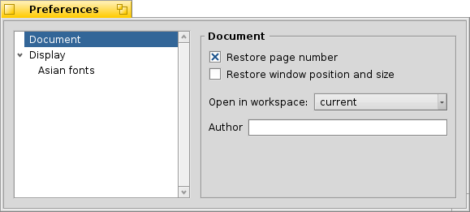
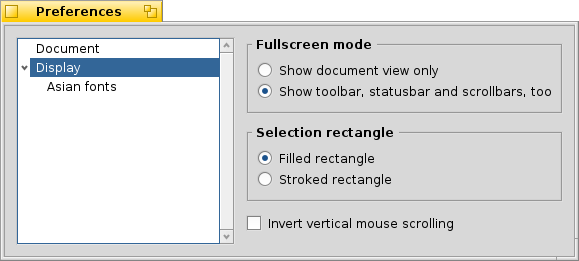
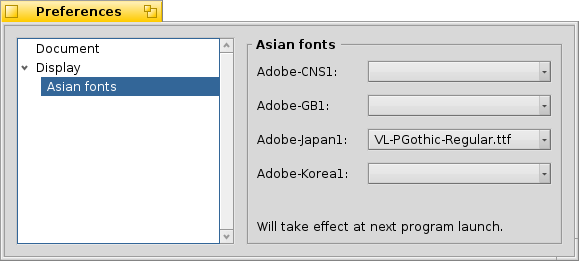

BePDF allows the user to configure many aspects of PDF file rendering
Document Panel

- Sets a bookmark at the last page viewed when re-opening a previously viewed document (especially handy for long documents)
- Have BePDF remember window size and screen position
- Opens BePDF in the designated workspace
- Sets the author of new or changed annotations
Display Panel

- Sets the fullscreen mode
- Chooses the style of the selection rectangle.
Asian Fonts

Specifies the font tape used for rendering of CJK text.